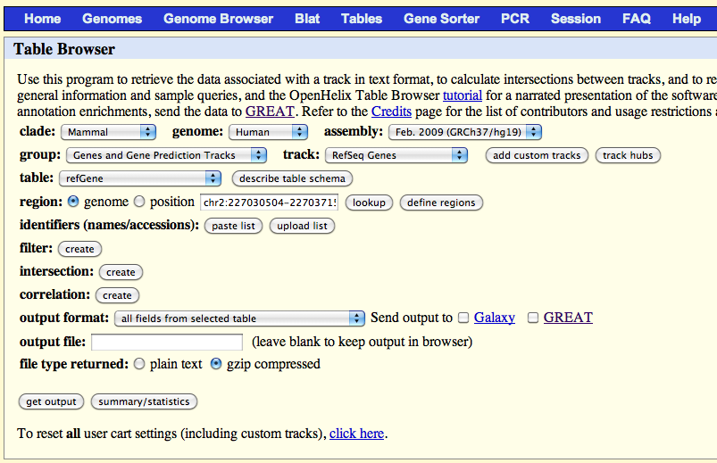
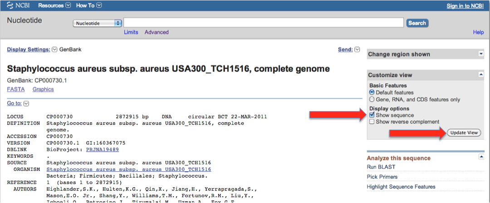
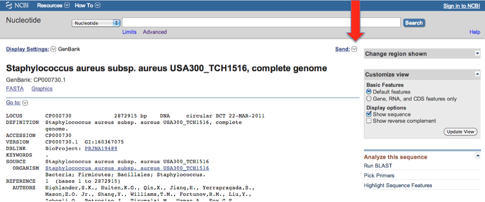
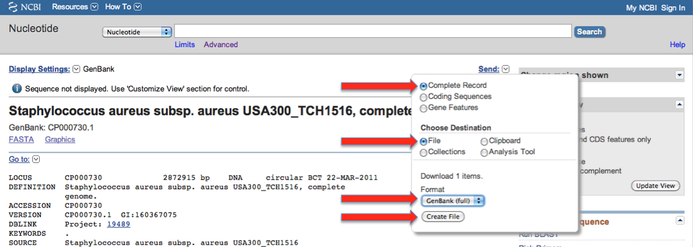

New genome: Building a new database
In order to add support for a new genome, you need to:- Get the reference genome sequence (e.g. in FASTA format).
- Get genome annotations. It can be either:
- GTF file (the easiest way)
- GFF file.
- RefSeq (UCSC) table.
- GenBank.
- Add the genome to snpEff's configuration file
- Create the database (i.e. "java -jar snpEff.jar build ...")
Note: All files can be compressed using gzip. E.g. the reference file 'hg19.fa' can be compressed to 'hg19.fa.gz', snpEff will automaticall decompress the file.
Option 1: Using GTF files
GTF 2.2 files are supported by snpEff (e.g. ENSEMBL relases genome annotations in this format).
- Get the genome and uncompress it
# Create directoy for this new genome cd /path/to/snpEff/data/ mkdir mm37.61 cd mm37.61 # Get annotation files wget ftp://ftp.ensembl.org/pub/current/gtf/mus_musculus/Mus_musculus.NCBIM37.61.gtf.gz mv Mus_musculus.NCBIM37.61.gtf.gz genes.gtf.gz # Get the genome cd /path/to/snpEff/data/genomes wget ftp://ftp.ensembl.org/pub/current/fasta/mus_musculus/dna/Mus_musculus.NCBIM37.61.dna.toplevel.fa.gz mv Mus_musculus.NCBIM37.61.dna.toplevel.fa.gz mm37.61.fa.gz
- Note: The FASTA file can be either in
/path/to/snpEff/data/genomes/mm37.61.fa
or in
/path/to/snpEff/data/mm37.61/sequences.fa - Add the new genome to the config file (see section "How to add a new genome to the configuration file" for details)
- Create database
cd /path/to/snpEff java -jar snpEff.jar build -gtf22 -v mm37.61
Option 2: Using a GFF file (e.g. FlyBase, WormBase, BeeBase)
This example shows how to create a database for a new genome. For this example we'll use the Drosophila melanogaster genome (dm5.31):- Get a GFF file (into path/to/snpEff/data/dm5.31/genes.gff):
mkdir path/to/snpEff/data/dm5.31 cd path/to/snpEff/data/dm5.31 wget ftp://ftp.flybase.net/genomes/Drosophila_melanogaster/dmel_r5.31_FB2010_08/gff/dmel-all-r5.31.gff.gz mv dmel-all-r5.31.gff.gz genes.gff.gz
- Note: GFF3 files can include the reference sequence in the same file. This is done by dumping the fasta file after a '##FASTA' line. You can also add the sequence fasta file to the 'data/genomes/' directory, like it is done in when using GTF format.
- Add the new genome to the config file (see section "How to add a new genome to the configuration file" for details)
- Create database (note the "-gff3" flag):
cd /path/to/snpEff java -jar snpEff.jar build -gff3 -v dm5.31
Option 3: Using a RefSeq table from UCSC
This example shows how to create a database for a new genome. For this example we'll use the Human genome (hg19):- Go to UCSC genome browser (http://genome.ucsc.edu/)
- Click on "Table" menu
- Select parameters as shown here:

- Click on "get output" and save the data to file "/path/to/snpEff/data/hg19/genes.txt".
- Add the fasta reference genome. The FASTA file can be either in
/path/to/snpEff/data/genomes/hg19.fa
or in
/path/to/snpEff/data/hg19/sequences.fa - Add the new genome to the config file (see section "How to add a new genome to the configuration file" for details)
- Create database (note the "-refSeq" flag):
cd /path/to/snpEff java -jar snpEff.jar build -refSeq -v hg19
Option 4: Using a GenBank
This example shows how to create a database for a new genome. For this example we'll use "Staphylococcus aureus":- Go to NIH page for CP000730
- Download the features in geneBank format, by clicking as shown in the following images (red arrows)
 Make sure you click the "Update" button!
Then you go to the "Send" menu
 and then
 - Save the GenBank data to "/path/to/snpEff/data/CP000730/genes.gb".
Note: If there are more than one genbank file for an organism (e.g. multiple chromosomes), then you can download each file and save them separately.
E.g.: Vibrio Cholerae has two chromosomes with GenBank accessions: NC_002505.1 and NC_002506.1. You can download both files and save them as snpEff/data/vibrio/NC_002505.1.gb and snpEff/data/vibrio/NC_002506.1.gb respectively. Then you can add the following entries in the config file:
# Vibrio Cholerae vibrio.genome : Vibrio Cholerae vibrio.chromosomes : NC_002505.1, NC_002506.1 vibrio.NC_002505.1.codonTable : Bacterial_and_Plant_Plastid vibrio.NC_002506.1.codonTable : Bacterial_and_Plant_PlastidSnpEff will load both files when building the database. - Create database (note the "-genbank" flag):
cd /path/to/snpEff java -jar snpEff.jar build -genbank -v CP000730
How to add a new genome to the configuration file
This example shows how to add a new genome to the config files. For this example we'll use the mouse genome (mm37.61):- Edit the config file to create the new genome
vi snpEffect.config
Add the following lines (you are editting snpEffect.config)
# Mouse genome, version mm37.61 mm37.61.genome : Mouse
- Optional: Add genome to Galaxy's menu
cd /path/to/galaxy cd tools/snpEffect/ vi snpEffect.xml
Add the following lines to the file<param name="genomeVersion" type="select" label="Genome"> <option value="hg37">Human (hg37)<option> <option value="mm37.61">Mouse (mm37.61)<option> <param>
- - - - - - - - - - - - - - - - - - - - - - - - - - - - - - - - - - - - - - - - - - - - - - - - - - - - - - - - - - -